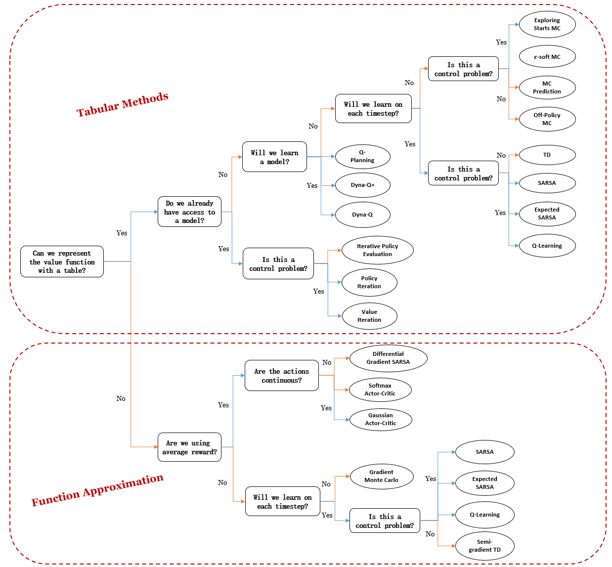

Chapter 1. Introduction to RL#
Learning through interaction with our environment is fundamental to acquiring knowledge, from infancy to adulthood. Whether playing as a child or learning complex skills like driving, we continuously absorb information about cause and effect through our actions and their consequences. This idea underpins most theories of learning and intelligence.
This book takes a computational approach to learning from interaction, focusing not on human or animal learning directly but on idealized learning scenarios. We will explore how machines can effectively solve learning problems of scientific interest. The approach we explore, called reinforcement learning, is much more focused on goal-directed learning from interaction than are other approaches to machine learning.
This chapter introduces RL with its definition, serveral examples, and the key elements in RL. This chapter is mostly descriptive, so you won’t see many diagrams or formulas. We assume that readers who are determined to set foot on this journey have more or less witnessed what RL is capable of, so let’s skip the motivation and dive into the world of RL!
1.1 Reinforcement Learning (RL)#
Definition: Reinforcement learning is learning what to do - how to map situations to actions - so as to maximize a numerical reward signal. The learner is not told which actions to take, but instead must discover which actions yield the most reward by trying them.
RL is simultaneously a problem, a class of solution methods that work well on the problem, and the field that studies this problem and its solution methods. It has two essential characteristics
Trial-and-error search: the learner learns by trying and failing.
Delayed reward: actions may affect not only the immediate reward but also the next situation and, through that, all subsequent rewards
Formalization: the problem of reinforcement learning is formalized using ideas from dynamical systems theory, specifically, as the optimal control of incompletely-known \(\textit{Markov decision processes}\) (introduced in chapter 3).
To put it in a nutshell, a learning agent senses the \(\textit{state}\) of its \(\textit{environment}\) to some extent and takes \(\textit{actions}\) that affect the state. At the mean time, the agent has a \(\textit{goal}\) or goals relating to the state of the environment to achieve, and is reflected by a \(\textit{reward}\) it receives from the environment at each interaction. Any method that is well suited to solving such problems - leading the agent to achieve the goal(s), we consider to be a reinforcement learning method.
Uniqueness:
Trade-off between exploration and exploitation: unlike other kinds of learning, in RL, the agent has to exploit what it has already experienced in order to obtain reward, but it also has to explore in order to make better action selections in the future. This is further explain in chapter 2 section 2.1
Goal-directed learning: RL explicitly considers the whole problem of a goal-directed agent interacting with an uncertain environment. It starts with a complete, interactive, goal-seeking agent who learns purely based on the reward signal it receives. This learning paradigm is simple yet requires much effort in designing the reward signal and is sensitive to reward hacking.
Note
By a complete, interactive, goal-seeking agent we do not always mean something like a complete organism or robot. These are clearly examples, but a complete, interactive, goal-seeking agent can also be a component of a larger behaving system
A simple example is an agent that monitors the charge level of robot’s battery and sends commands to the robot’s control architecture. This agent’s environment is the rest of the robot together with the robot’s environment.
Examples of RL problem
Example 1: A gazelle calf struggles to its feet minutes after being born. Half an hour later it is running at 20 miles per hour
Exapmle 2: A mobile robot decides whether it should enter a new room in search of more trash to collect or start trying to find its way back to its battery recharging station. It makes its decision based on the current charge level of its battery and how quickly and easily it has been able to find the recharger in the past.
Patterns: in common:
Both exapmles involve interaction between an active decision-making agent and its environment, within which the agent seeks to achieve a goal despite uncertainty about its environment.
The effects of actions cannot be fully predicted; thus the agent must monitor its environment frequently and react appropriately.
The agent can use its experience to improve its performance over time.
1.2 Elements of RL#
Policy \(\pi\): defines the learning agent’s way of behaving at a given time. Roughly speaking, a policy is a mapping from perceived states of the environment to actions to be taken when in those states.
The policy is the core of a reinforcement learning agent in the sense that it alone is su cient to determine behavior. In general, policies may be stochastic, specifying probabilities for each action. The concept of policy will be explained more formally in Chapter 3 section 3.3
Reward signal \(R_t\): defines the goal of a reinforcement learning problem. On each time step, the environment sends to the reinforcement learning agent a single number called the reward. The agent’s sole objective is to maximize the total reward it receives over the long run.
In general, reward signals may be stochastic functions of the state of the environment and the actions taken. The concept will be formally introduced in chapter 3 section 3.2.1.
Value function: specifies what is good in the long run. Roughly speaking, the value of a state is the total amount of reward an agent can expect to accumulate over the future, starting from that state. Rewards are immediate, whereas valus are more farsighted. A state might always yield a low immediate reward but still have a high value because it is regularly followed by other states that yield high rewards.
Value and reward:
To make a human analogy, rewards are somewhat like pleasure (if high) and pain (if low), whereas values correspond to a more refined and farsighted judgment of how pleased or displeased we are that our environment is in a particular state.
Rewards are in a sense primary, whereas values, as predictions of rewards, are secondary. Without rewards there could be no values, nevertheless, it is values with which we are most concerned when making and evaluating decisions. In fact, the most important component of almost all reinforcement learning algorithms we consider is a method for effciently estimating values.
Types of value functions: There are two types of value functions: state-value function \(v(s)\) and action-value function \(q(s,a)\), we will introduce them later in section 3.3.1.
Model of the environment (optional): By a model of the environment we mean anything that an agent can use to predict how the environment will respond to its actions. Given a state and an action, a model produces a prediction of the resultant next state and next reward.
Models are used for \(\textit{planning}\), by which we mean any way of deciding on a course of action by considering possible future situations before they are actually experienced. In chapter 7, we will explore \(\textit{model-based}\) RL systems that simultaneously learn by trial and error, and learn a model then use the model for planning.
1.3 Summary#
In this chapter, we introduced reinforcement learning (RL) as a trial-and-error learning process where an agent interacts with an uncertain environment to maximize cumulative rewards. The agent balances exploration and exploitation while learning purely from reward signals emitted by the environment.
Key elements of RL include the poliy \(\pi\), which maps states to actions, the reward signal \(R_t\), which defines the learning objective, the value function, which estimates long-term rewards, and an optional model of the environment.
Starting from here, we will introduce the fundamental concepts of RL in the next 2 chapters and showcase different RL algorithms from chapter 4 to chapter 10. Here is a mindmap of all kinds of algorithms you are going to learn in this adventure:
Lastly, to “reinforce” your learning, I have added an extra chapter 11 to introduce several most influential algorithms in the era of deep learning (and Large Language Models), which were not included in Sutton’s book. So get excited and buckle up!